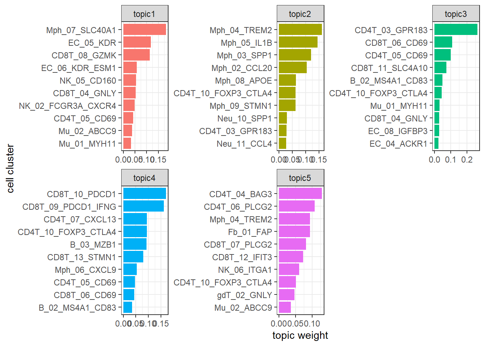
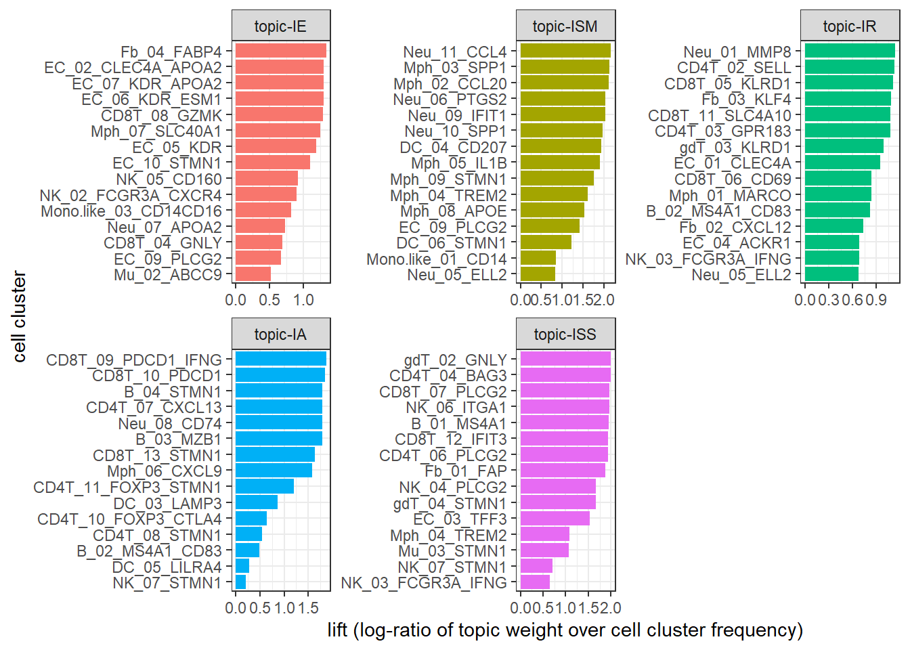
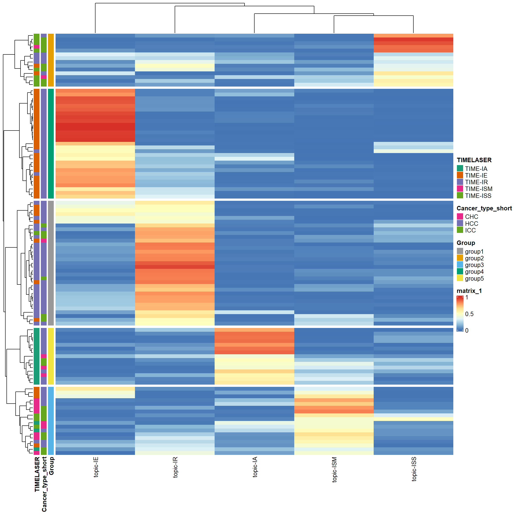
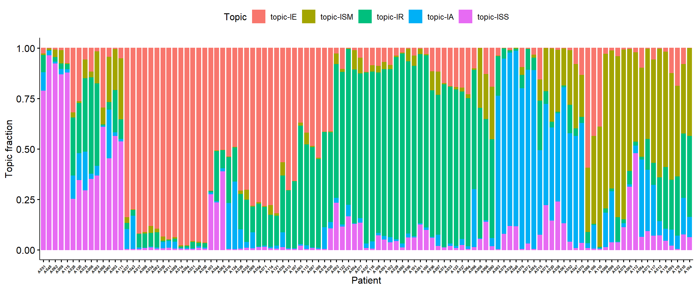
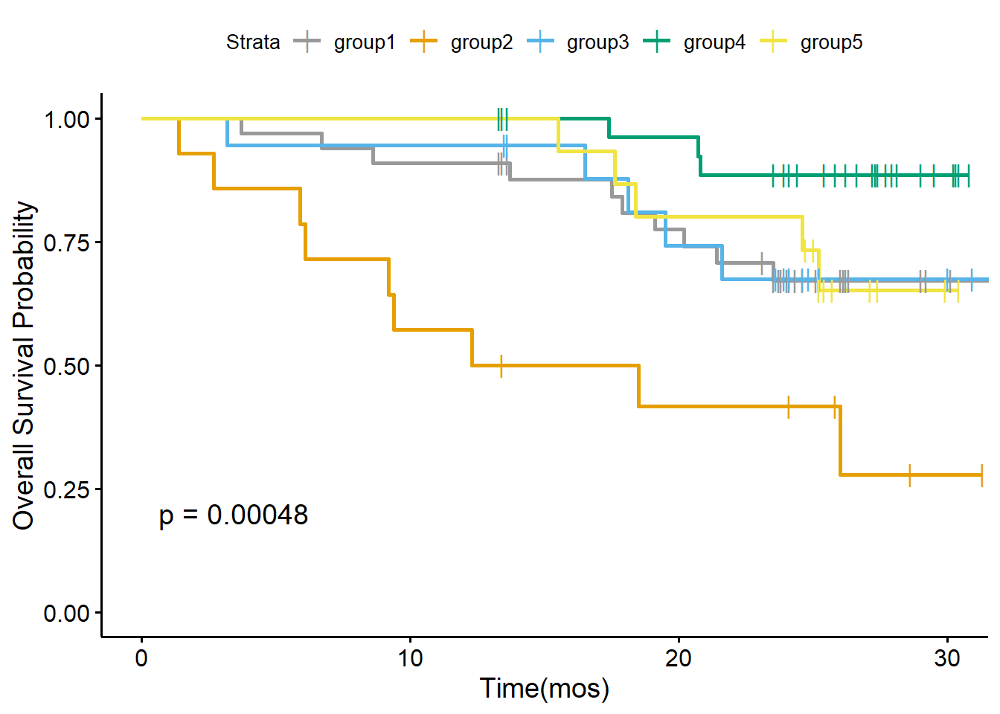
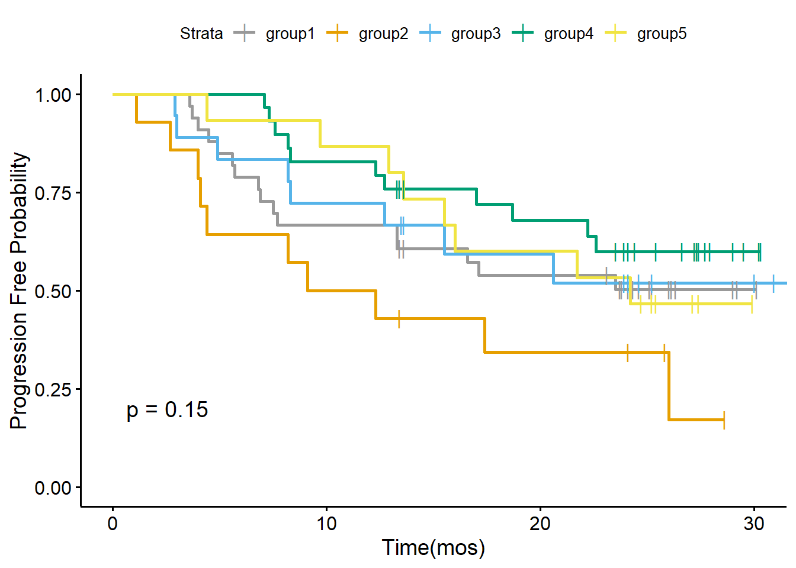
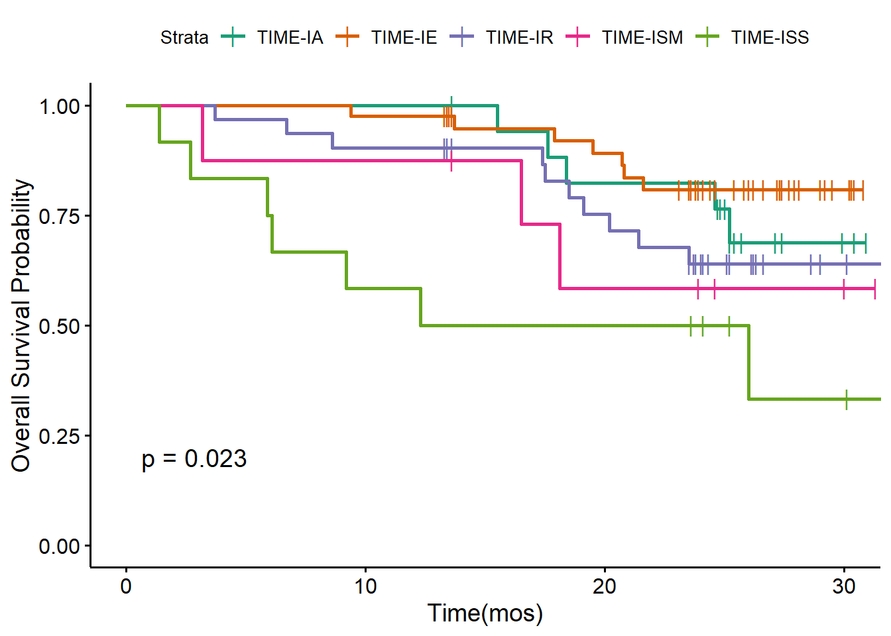
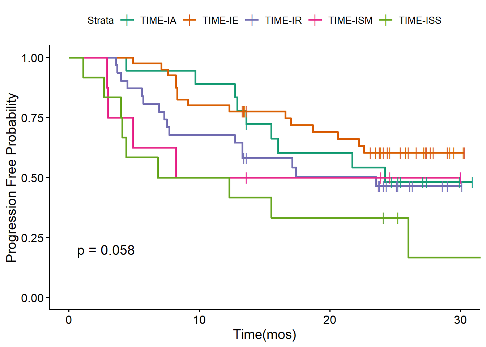

Here we walk through the pipeline of the latent Dirichlet Allocation (LDA) model, showing an example of its application on a scRNA-seq dataset from liver cancer patients. This dataset is obtained from a recent published nature paper.
In text mining, LDA requires the input as a document-by-term count matrix, where each row represent each document,each column represent each term, each entry in the matrix is the number of occurrences of each term (a word is a single occurrence of a term). Motivated by the similarities between text data mining and single-cell analysis, for single-cell analysis, LDA consider:
cells as words,
cell types as terms,
patient samples as documents,
biological processes as topics.
Before applying the LDA model, we also need to prepare the cell type count matrix as the input of LDA. One common approach to get the cell type count matrix is to pool all cells together and do the clustering. For example, you can use Seurat to cluster cells and prepare the cell type-by-sample matrix. Before the pooled clustering analysis, we highly recommend to check if there is a batch effect across patients.
In this workflow, we use a published dataset to illustrate the application of LDA on single-cell dataset. We just downloaded the clustered data, including annotated cell types and cell type-by-sample count matrix from the paper. All data used in the analysis can be found in the supplementary data files of the original paper or in the data portal. All cell types have been well-annotated in the original paper.
Firstly, we have to install core R packages required for LDA analysis. We use the R package topicmodels for model inference, R package slam for preparing the input data, R package tidytext for extracting the output data.
library(topicmodels)
library(slam)
library(tidytext)In this workflow, we use some R packages for data visualization and analysis. But these R packages are not necessary, you can use other similar R packages instead.
library(tidyverse)
library(ComplexHeatmap)
library(survminer)
library(survival)
library(RColorBrewer)Then we read the cell type count matrix, which was download from the the data portal. We include 130 tumor tissue samples from 119 patients. Several patients have multiple tumor tissue samples.
metadata.sel.count_tumor_tissue <- read.csv("https://raw.githubusercontent.com/xiyupeng/LDA_examples/main/data/metadata-sel-count_tumor_tissue.csv",row.names = 1)
## exclude clusters that were removed in the paper due to low frequency or low quality
removed_clusters<-c("CD4T_01_CCR7", "CD4T_09_FOXP3", "CD8T_01_CCR7", "CD8T_02_CX3CR1",
"CD8T_03_GZMK_S1PR1", "gdT_01_GNLY_S1PR5", "NK_01_FCGR3A_CX3CR1",
"MonoDC", "Mo_01_CD14", "Mo_02_CD16", "Neu_02_S100A12", "Neu_03_ISG15", "Neu_04_TXNIP")
data_matrix<- metadata.sel.count_tumor_tissue %>% dplyr::select(!removed_clusters)The final input data matrix for LDA has 130 samples with 76 features (clusters).
dim(data_matrix)## [1] 130 76We use topicmodels R package for model inference. We use Gibbs sampling algorithm and choose number of topics K = 5:
Gibbs sampling. The topicmodels R package provides two algorithms, variation EM and Gibbs sampling, for model inference. The two different algorithms may contribute to different results (See the documentation of the topicmodels R package). But in the example given in the R package, the Gibbs sampling algorithm seems to return better models than Variation EM. Thus we prefer Gibbs sampling in the analysis. We used the following setting for Gibbs sampling: iter = 1000, burnin = 1000, thin = 100 (1000 Gibbs sampling draws are made with the first 1000 iterations discarded and then every 100th iteration kept).
K = 5. Number of topics K also needs to be selected before running the model inference. Since the original paper identifies five TIME subtypes, we choose K = 5. You may use R package ldatuning or cross-validation to select number of topics K.
The Gibbs sampling will take several minutes. We can save the result here for further analysis.
## prepare data format
count_matrix_triplet <- as.simple_triplet_matrix(as.matrix(data_matrix))
## model inference
lda<-LDA(count_matrix_triplet, control = list(seed = 2021, burnin = 1000,thin = 100, iter = 1000), k =5, method = "Gibbs")
## save the data
save(lda, file = "~/flow_cytometry/manuscript/liver cancer data/LDA_K5_filtered.Rdata")Below we reload the data and check the output of the LDA model.
## load the data
load(file = "~/flow_cytometry/manuscript/liver cancer data/LDA_K5_filtered.Rdata")
ntopics = 5
## extract output of the LDA model
para<-posterior(lda)
colnames(para$topics)<-paste0("topic",colnames(para$topics))
rownames(para$terms)<-paste0("topic",rownames(para$terms))The main output of the LDA model contains two matrix:
## show first five columns
head(round(para$terms[,1:5],5))## B_01_MS4A1 B_02_MS4A1_CD83 B_03_MZB1 B_04_STMN1 CD4T_02_SELL
## topic1 0.00000 0.00129 0.00172 0.00000 0.00000
## topic2 0.00000 0.00000 0.00004 0.00015 0.00000
## topic3 0.00000 0.04874 0.00206 0.00022 0.02038
## topic4 0.00095 0.03500 0.09263 0.00741 0.00020
## topic5 0.02532 0.00000 0.00015 0.00000 0.00000## show first five rows
head(round(para$topics,3))## topic1 topic2 topic3 topic4 topic5
## A002_ICC 0.030 0.052 0.663 0.023 0.232
## A003_ICC 0.007 0.204 0.210 0.018 0.562
## A004_ICC 0.013 0.095 0.763 0.003 0.127
## A005_ICC 0.007 0.605 0.065 0.012 0.311
## A006_ICC 0.118 0.029 0.478 0.026 0.350
## A007_ASC 0.006 0.126 0.093 0.058 0.717The topic prevalence matrix is merged with the original data frame for further analysis. But before we investigating the distribution of topics, we want to exam the topic content matrix and interpret each topic by selecting representative cell types.
metadata.sel.count_tumor_tissue<-as.data.frame(cbind(metadata.sel.count_tumor_tissue,para$topic))
metadata.sel.count_tumor_tissue$pt<-gsub("_.*","",rownames(metadata.sel.count_tumor_tissue))The interpretability of topic models is a key advantage. In text analysis, representative terms, in this case, representative clusters, are used to define topics. Sometimes people directly use the topic weigts in topic content matrix to select representative terms.
In this case, you can simply find clusters with top weight for each topic with terms(),
terms(lda,5)## Topic 1 Topic 2 Topic 3 Topic 4
## [1,] "Mph_07_SLC40A1" "Mph_04_TREM2" "CD4T_03_GPR183" "CD8T_10_PDCD1"
## [2,] "EC_05_KDR" "Mph_05_IL1B" "CD8T_06_CD69" "CD8T_09_PDCD1_IFNG"
## [3,] "CD8T_08_GZMK" "Mph_03_SPP1" "CD4T_05_CD69" "CD4T_07_CXCL13"
## [4,] "EC_06_KDR_ESM1" "Mph_02_CCL20" "CD8T_11_SLC4A10" "CD4T_10_FOXP3_CTLA4"
## [5,] "NK_05_CD160" "Mph_08_APOE" "B_02_MS4A1_CD83" "B_03_MZB1"
## Topic 5
## [1,] "CD4T_04_BAG3"
## [2,] "CD4T_06_PLCG2"
## [3,] "Mph_04_TREM2"
## [4,] "Fb_01_FAP"
## [5,] "CD8T_07_PLCG2"or visualize them with barplots.
### beta
ap_topics <- tidy(lda, matrix = "beta")
ap_topics$topic<-as.factor(paste0("topic",ap_topics$topic))
levels(ap_topics$topic)<-c("topic1", "topic2", "topic3", "topic4", "topic5")
ap_topics %>%
group_by(topic) %>%
slice_max(beta, n = 10) %>%
ungroup() %>%
arrange(topic, -beta) %>%
mutate(term = reorder_within(term, beta, topic)) %>%
ggplot(aes(beta, term, fill = factor(topic))) +
geom_col(show.legend = FALSE,orientation = "y") +
facet_wrap(~ topic, scales = "free") +
scale_y_reordered()+theme_bw()+
xlab("topic weight")+ylab("cell cluster")
In the next section Association to meta data, you will find topic 1 is correlated to the Immune Exclusion(IE) subtype, topic 2 to the immune suppression mediated by myeloid (ISM) subtype, topic 3 to the immune residence (IR) subtype, topic 4 to the immune activation (IA) subtype, and topic 5 to the immune suppression mediated by stromal cells (ISS) subtypes. We use label topic_IE, topic_ISM, topic_IR, topic_IA, topic_ISS to annotate the five topics we identified with the LDA model.
One main drawback of using topic weight to select representatives is that high abundant clusters with little variation are likely to be selected as representatives due to their high topic weights. In our analysis, the top representative clusters from each topic are selected after ranking by lift, which is the log ratio of estimated topic weights over its empirical frequency. The lift metric gives higher weights to clusters that appear less frequently in other topics.
Below we show top clusters with top lift for each topic. These clusters are largely overlapped with the manually-selected clusters in the original paper.
### calcualte the lift (log ratio of beta over cluster empirical frequency)
wordcounts <- colSums(data_matrix)
logbeta <- lda@beta
emp.prob <- log(wordcounts) - log(sum(wordcounts))
lift <- logbeta - rep(emp.prob, each = nrow(logbeta))
colnames(lift)<-lda@terms
lift<-as.data.frame(lift)
lift$topic<-as.factor(paste0("topic",1:ntopics))
levels(lift$topic)<-c("topic-IE", "topic-ISM", "topic-IR", "topic-IA", "topic-ISS")
### show top clusters for each topic
lift_top_terms <- lift %>% gather(.,key = cluster,value = lift,-topic) %>%
group_by(topic) %>%
slice_max(lift, n = 15) %>%
ungroup() %>%
arrange(topic, -lift)
lift_top_terms %>%
mutate(cluster = reorder_within(cluster, lift, topic)) %>%
ggplot(aes(lift, cluster, fill = factor(topic))) +
geom_col(show.legend = FALSE,orientation = "y") +
facet_wrap(~ topic, scales = "free") +
scale_y_reordered()+theme_bw()+
xlab("lift (log-ratio of topic weight over cell cluster frequency)")+ylab("cell cluster")
Our next step is to exam the prevalence of the topics and correlate to clinical outcomes.
The original paper identified five different TIME in tumor tissue samples, including immune activation (IA), immune suppression mediated by myeloid (ISM) or stromal cells (ISS), immune exclusion (IE), and immune residence (IR) phenotypes. However, in the original paper, the authors used a highly ad hoc approach, involving several complicated steps that heavily require immunological knowledge: 1) Identification of five groups of highly correlated clusters, 2) manual selection of gene signatures per group, and 3) classifying patients into five TIME subtypes based on the selected gene signatures that involve much subjectivity. Later we show applying the LDA model, we also identified five topics, which correspond to the five TIME subtypes in a completely unsupervised fashion.
The first step is to prepare the metadata file, combining clinical data and assigned TIME subtypes as a single data frame. The clinical data file liver_cancer_patient_clinical_data.csv and TIME subtype data file TIME_subtypes.csv are supplementary data files from the original paper. The two data files can be downloaded from here. We have prepared the a cleaned data file clinical_data.Rdata, which can be downloaded from here. Same as the paper, we also only focus on the three major histological subtypes (HCC, ICC, and CHC).
Below we upload the cleaned metadata file. This data frame has 30 columns from 111 liver cancer patients with HCC, ICC, and CHC. We first check column names of the 30 columns.
load(file = "~/flow_cytometry/manuscript/liver cancer data/clinical_data.Rdata")
dim(clinical_data_merge)## [1] 111 30colnames(clinical_data_merge)## [1] "Patient" "Gender" "Age..years."
## [4] "Cancer_type" "Cancer_type_short" "Primary_site_of_SLC"
## [7] "Samples.for.scRNA.seq" "No._PB_samples" "No._AL_samples"
## [10] "No._tumor_samples" "Differentiation" "Venous_invasion"
## [13] "T" "N" "M"
## [16] "TNM_stage" "BCLC_stage" "Cirrhosis"
## [19] "Virus" "Relapse_state..Yes.0." "FPS_time"
## [22] "OS_state..Yes.0." "OS_time" "CM1"
## [25] "CM2" "CM3" "CM4"
## [28] "CM5" "TIMELASER" "CancerType"We merge the clinical data clinical_data_merge with the count matrix of scRNA-seq metadata.sel.count_tumor_tissue. For patient with multiple samples, only the first sample of the patient in the data matrix metadata.sel.count_tumor_tissue will be kept.
data_merge<-merge(clinical_data_merge,metadata.sel.count_tumor_tissue,by.x = "Patient",by.y = "pt")
data_merge<-distinct(data_merge,Patient,.keep_all = TRUE)
dim(data_merge)## [1] 109 124A heatmap can help to visualize the distribution of topics across patients. In the heatmap, it is clear we can find that topic 1 is correlated to the IE phenotype, topic 2 -to the ISM phenotype, topic 3 -to the IR phenotype, topic 4 -to the IA phenotype, and topic 5 -to the ISS phenotype. Compared to the simple clustering method in the original paper, LDA directly correlates topics (or cellular modules, TIME subtypes) to patient-level clinical outcomes, while the original paper relies on module-specific gene signatures as the link. LDA can not only identify the topics, but also quantify topic fraction within each sample. It can provide novel insights on complex immune phenotypes among patients and complex and unique pharmacodynamic changes upon treatment.
## prepare data for the heatmap
pt_meta <- data_merge %>% select(Patient,Cancer_type_short,Differentiation,"Relapse_state..Yes.0.", "FPS_time","OS_state..Yes.0.","OS_time", TIMELASER)
gamma_data<-data_merge %>% select(starts_with("topic"))
colnames(gamma_data)<-c("topic-IE", "topic-ISM", "topic-IR", "topic-IA", "topic-ISS")
## pre-identify patient subgroups with hierarchical clustering
rows.tree<-hclust(dist(gamma_data))
group<-as.data.frame(cutree(rows.tree,5))
colnames(group)<-"Group"
group$Group<-paste0("group",group$Group)
## select columns to be shown in the heatmap
pt_meta<-as.data.frame(cbind(pt_meta,group))
pt_meta_select<-pt_meta %>% dplyr::select(Group,Cancer_type_short,TIMELASER)
## Add color
ann_colors = list(
Cancer_type_short = c(HCC = "#7570B3", CHC = "#E7298A", ICC = "#66A61E"),
Group = c(group1 = "#999999", group2 = "#E69F00", group3 = "#56B4E9", group4 = "#009E73", group5 = "#F0E442"),
TIMELASER = c(`TIME-IA`="#1B9E77", `TIME-IE`= "#D95F02", `TIME-IR` = "#7570B3", `TIME-ISM` = "#E7298A" , `TIME-ISS` = "#66A61E")
)
## heatmap
ComplexHeatmap::pheatmap(gamma_data,annotation_row =pt_meta_select,cutree_rows = 5,annotation_colors = ann_colors)
We can also show topic fraction within each sample.
topic_fraction<-data_merge %>%
select(starts_with("topic"),Patient) %>%
gather(key = "Topic",value = "fraction",-Patient)
topic_fraction$Topic<-as.factor(topic_fraction$Topic)
levels(topic_fraction$Topic)<-c("topic-IE", "topic-ISM", "topic-IR", "topic-IA", "topic-ISS")
my_orders<-data_merge$Patient[rows.tree$order]
p1<-ggbarplot(topic_fraction,"Patient","fraction",fill = "Topic",color = "Topic")+ylab("Topic fraction")+xlab("Patient")+scale_x_discrete(limits = my_orders)
ggpar(p1,font.xtickslab = c(5,"bold"),xtickslab.rt = 45)
Based on topic fractions, we can roughly divide patients into five groups based on their topic fraction. Below we draw the Kaplan-Meier analysis plot of OS and PFS stratified by five patient subgroups.
data_merge$OS_state..Yes.0.<-ifelse(data_merge$OS_state..Yes.0.>0, 0, 1)
data_merge$Relapse_state..Yes.0.<-ifelse(data_merge$Relapse_state..Yes.0.>0, 0, 1)
cbPalette <- c("#999999", "#E69F00", "#56B4E9", "#009E73", "#F0E442", "#0072B2", "#D55E00", "#CC79A7")
my.labs = levels(as.factor(pt_meta$Group))
os <- Surv(data_merge$OS_time, data_merge$OS_state..Yes.0.)
ggsurvplot(survfit(os~Group,data = pt_meta),pval = TRUE,palette = cbPalette,censor.shape="|", censor.size=4,legend.labs=my.labs)+ylab("Overall Survival Probability")+xlab("Time(mos)")
pfs<-Surv(data_merge$FPS_time, data_merge$Relapse_state..Yes.0.)
ggsurvplot(survfit(pfs ~ Group, data = pt_meta),pval=TRUE,palette = cbPalette,censor.shape="|", censor.size=4, legend.labs=my.labs)+ylab("Progression Free Probability")+xlab("Time(mos)")
We also draw the Kaplan-Meier analysis plot of OS and PFS stratified by five TIME subtypes defined by the original paper.
TIMEPalette<-brewer.pal(n = 5, name = 'Dark2')
my.labs = levels(as.factor(pt_meta$TIMELASER))
ggsurvplot(survfit(os ~ TIMELASER,data = pt_meta),pval = TRUE,palette = TIMEPalette,censor.shape="|", censor.size=4, legend.labs=my.labs)+ylab("Overall Survival Probability")+xlab("Time(mos)")
ggsurvplot(survfit(pfs ~ TIMELASER, data = pt_meta),pval=TRUE,palette = TIMEPalette,censor.shape="|", censor.size=4, legend.labs=my.labs)+ylab("Progression Free Probability")+xlab("Time(mos)")